TL;DR
Matthew C. Martelle
matthew@martelle.dev
Software Engineer III | Age of Learning (Creators of ABCmouse.com) | 2016-2022
- JavaScript, PHP, HTML, CSS (8 Years)
- Rust (4 Years)
- Flutter/Dart (2 Years)
B.S. Mechanical Engineering 2012, Cal Poly
Contact Information
Matthew C. Martelle
matthew@martelle.dev
Work Experience
My own apps: SHOW YOUR WORK, Lanthir-CLI, Crepe Bordeaux, DEML | January 2023 - Present
Age of Learning | January 2016 - December 2022
InterAct | January 2013 - October 2015
Age of Learning
Glendale, CA
Age of Learning corporate website
Age of Learning's main product ABCmouse.com
Software Engineer III
January 2016 - December 2022
Projects
- Parent Section
- Billing
- Subscription Management
- Settings
- New Onboarding section
- Shortened Cancellation Path built for A/B testing
- Countless A/B tests for the Student Homepage (so many)
InterAct
Ventura, CA & Kenai, Alaska
Projects
Conoco Phillips Alaska
Verified and updated the piping and instrumentation diagrams of systems with pressure safety valves at the:
- Tyonek Oil Platform
- LNG Plant
General Consultant Work
- Injection Well Permit Analysis
- Emmy Oil Platform
Education
Mechanical Engineering B.S., 2012
California Polytechnic State University, San Luis Obispo, CA
Skills
JavaScript, PHP, HTML, CSS (8 Years)
- Javascript Frameworks
- Angular 1.x
- Lit Html, Lit Element
- AofLJS 3.x
- Mithril
Rust (4 Years)
- CLI tools, and more CLI tools.
- Bevy ECS Game Engine
- Seed-RS (Elm-like wasm website framework in Rust)
- Iced
Flutter/Dart (2 Years)
- Apps
- WASM websites
Lua (3 Years)
- Love2d Game Engine
- Computercraft robots in Minecraft
- PICO-8 Fantasy Console
C# (1 Year)
- Unity Game Engine
Languages I've dabbled in for fun
- Go
- CUE
- Elm
- Haskell
- OCaml
- Zig
- Scheme
- Python
- C/C++
- Nix
- Nu
- Fish
Personal Projects
Websites
- Active Recall JS | Website | GitHub
- Mind Monsoon | Website | GitHub
- Visual Metronome | Website | GitHub
CLI Tools
- Crepe Bordeaux clipboard tool | GitHub
- DEML (DAG Elevation Markup Language) | GitHub
Apps
- SHOW YOUR WORK cascading calculator
- Solunar Clock | GitHub
Game Design Exploration
- One button input:
- Curling Game
- Square Chicken Fighting Game
Bevy Game Jam Games
Mechanical Engineering
- FFN 3000 (Forget Fan Noise) Fanless Chimney Effect passive laptop cooler
- DT BCS RC Aircraft (Differential Thrust, Blown Control Surface)
SHOW YOUR WORK
A cascading table calculator inspired by Scheme, RPN, and Excel.
For when you want more than a calculator app, but don't want to wait for Excel to open.
Calculations are arbitrary precision. The copy/paste helper allows precision and number format sent to the clipboard to be easily adjusted.
Navigate with VIM motions.
Change inputs and see all intermediate values.
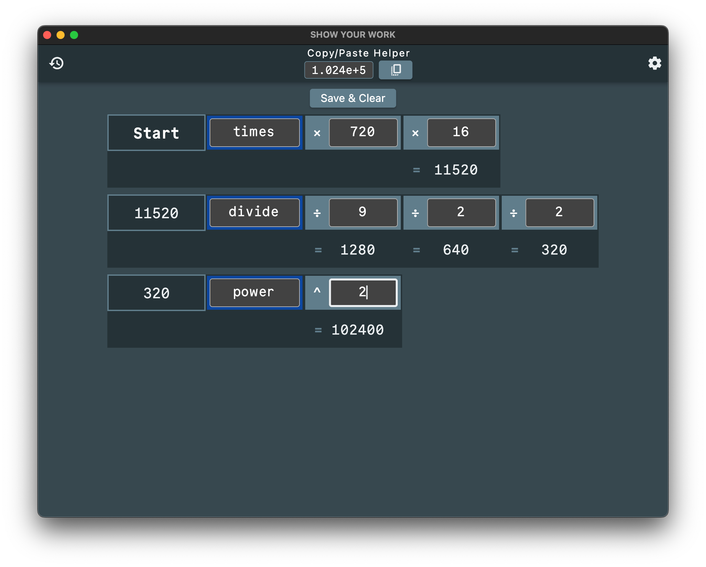
In progress. It works well enough for my personal usage, but I'd like to polish out some rough spots before I release it.
Built in Flutter
Crepe Bordeaux
The cross-platform clipboard cli tool | GitHub | crates.io
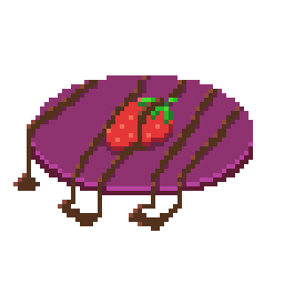
Copy:
$ echo "foo" | cb
Paste:
$ cb
foo
Clear:
$ cb clear
Save to a register:
$ echo "thing I want to save for a while" | cb memorable-name
Paste from a register:
$ cb memorable-name
thing I want to save for a while
List registers:
$ cb list
memorable-name
Clear a register:
$ cb memorable-name clear
Clear system clipboard and all registers:
$ cb clear-all
Select a register interactively with fzf (or skim) in bash:
$ cb $(cb list | fzf)
No clipboard available?
cb will write to a .txt file in the folder determined by Rust's std::env::temp_dir
Want to use a different folder?
Set the environment variable CB_DIR
Why, though?
I was enjoying Amila's cb interface on my main computer and had already forked it to add Wayland support with arboard. However, on a minimal install of NixOS with no display/window manager there was no clipboard for it to use, so I made this.
Why "crepe-bordeaux", though?
The names clipboard-cli and cli-clipboard were already taken, and tealdeer inspired creativity.
DEML (DAG Elevation Markup Language)
Languages designed to represent all types of graph data structures, such as Graphviz's DOT Language and Mermaid JS's flowchart syntax, don't take advantage of the properties specific to DAGs (Directed Acyclic Graphs).
DAGs act like rivers. Water doesn't flow upstream (tides and floods being exceptions). Sections of a river at the same elevation can't be the inputs or outputs of each other, like the nodes C, D, and E in the image below. Their input is B. C outputs to F, while D and E output to G.
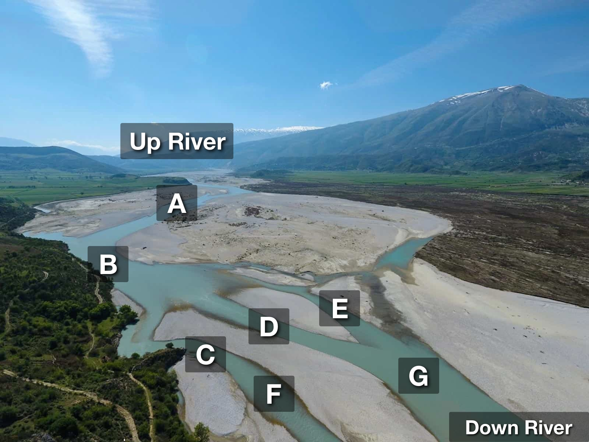
DEML's goal is to use this ordering as part of the file syntax to make it easier for humans to parse. In DEML we represent an elevation marker with ---- on a new line. The order of elevation clusters is significant, but the order of nodes between two ---- elevation markers is not significant.
UpRiver > A
----
A > B
----
B > C | D | E
----
C
D
E
----
F < C
G < D | E > DownRiver
----
DownRiver < F
Nodes are defined by the first word on a line. The defined node can point to its outputs with > and to its inputs with <. Inputs and outputs are separated by |.
Dagrs
Dagrs is a library for running multiple tasks with dependencies defined in a DAG. In DEML, shell commands can be assigned to a node with =. DEML files can be run via dag-rs with the comand deml run -i <filepath>.
To compare the difference in readability, here is the Dagrs YAML example in both YAML and DEML
YAML
dagrs:
a:
name: "Task 1"
after: [ b, c ]
cmd: echo a
b:
name: "Task 2"
after: [ c, f, g ]
cmd: echo b
c:
name: "Task 3"
after: [ e, g ]
cmd: echo c
d:
name: "Task 4"
after: [ c, e ]
cmd: echo d
e:
name: "Task 5"
after: [ h ]
cmd: echo e
f:
name: "Task 6"
after: [ g ]
cmd: python3 ./tests/config/test.py
g:
name: "Task 7"
after: [ h ]
cmd: node ./tests/config/test.js
h:
name: "Task 8"
cmd: echo h
DEML
H > E | G = echo h
----
G = node ./tests/config/test.js
E = echo e
----
F < G = python3 ./tests/config/test.py
C < E | G = echo c
----
B < C | F | G = echo b
D < C | E = echo d
----
A < B | C = echo a
Mermaid JS
To convert DEML files to Mermaid Diagram files (.mmd) use the command deml mermaid -i <inputfile> -o <outputfile>. The mermaid file can be used to generate an image at mermaid.live
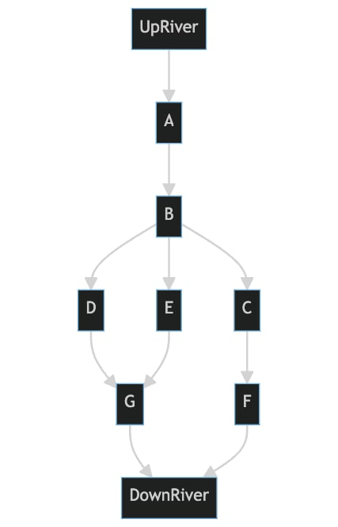
Goals
- Put my idea for an elevation based DAG representation into the wild
- Run DAGs with dag-rs
- Convert DEML files to Mermaid Diagram files
- Syntax highlighting tree-sitter-deml
- Add a syntax to label edges
Why, Though?
I was thinking about how it's annoying in languages like C when function declaration order matters. Then I wondered if there could be a case when it would be a nice feature for declaration order to matter and I thought of DAGs.
Visual Metronome
Reading up on the Web Animation 2 specs I realised this visual metronome would be easy to make.
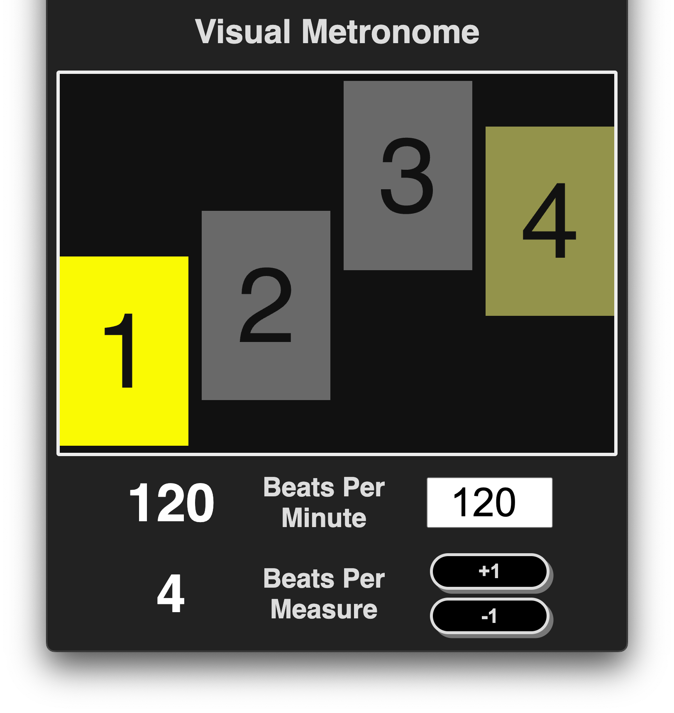
Built in Elm
Active Recall JS
An interactive auditory flash card system with spoken prompts using the text to speech features of Web Speech API
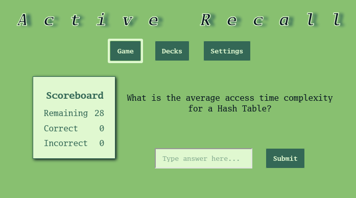
Inspired by the Anki flash card system.
Made with MithrilJS
Solunar Clock
A 24 hour solar lunar clock built with Iced.
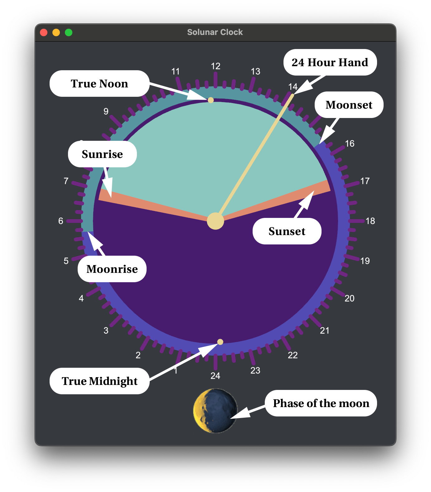
Mind Monsoon
A cooperative brainstorming website where multiple people can add ideas and upvote or downvote them.
I use it most often when a group of people want to go somewhere for lunch but can't decide where to go. This can really speed up the process.
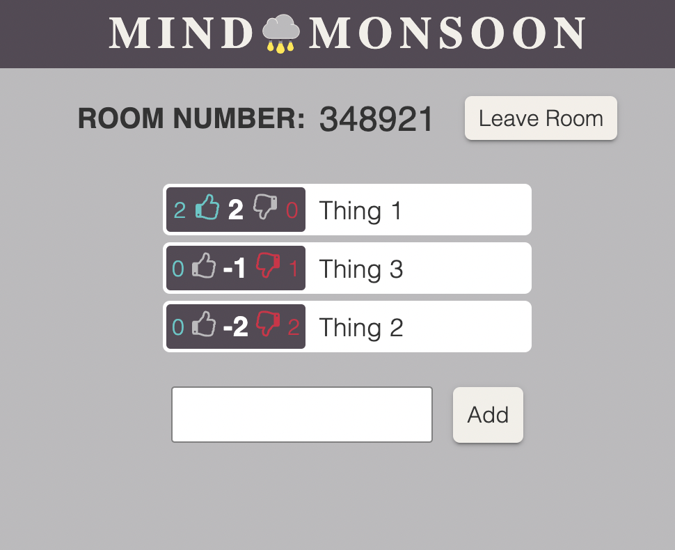
Hosted at mindmonsoon.com (sadly, brainstorm.com was taken)
Built with AofL JS
Pixel Art
Dog Portraits
Some of my friend's dogs.
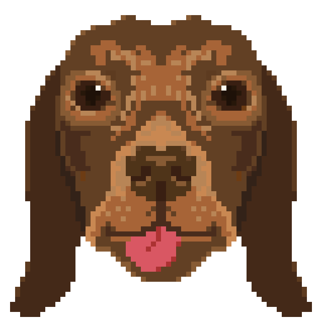 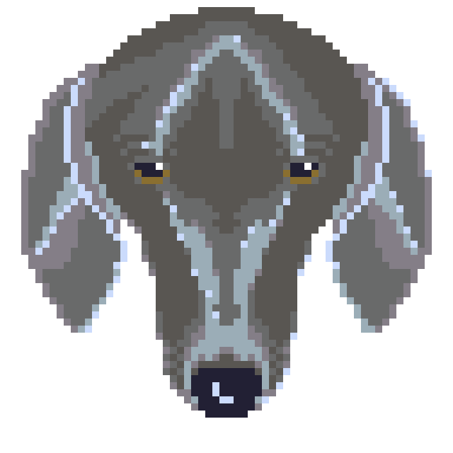 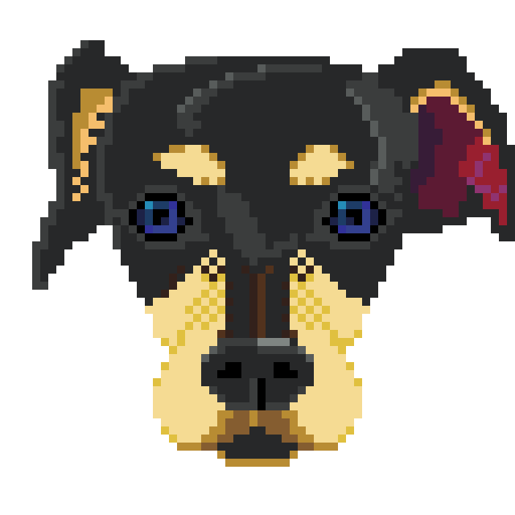 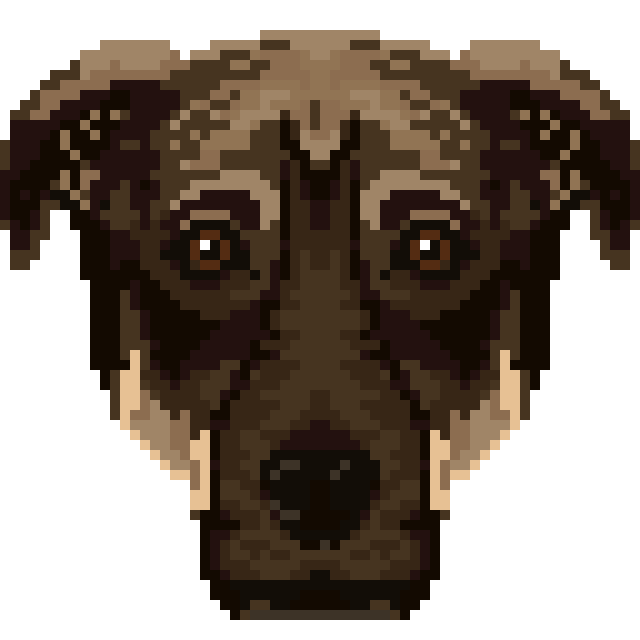 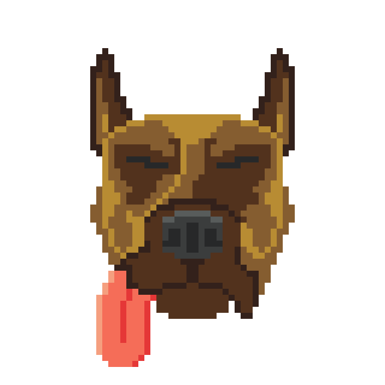 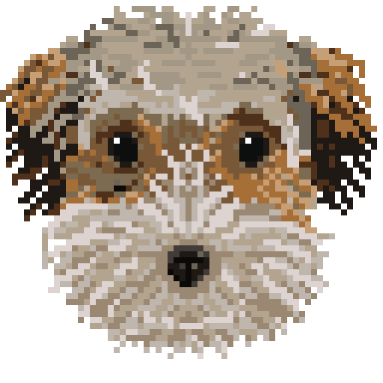 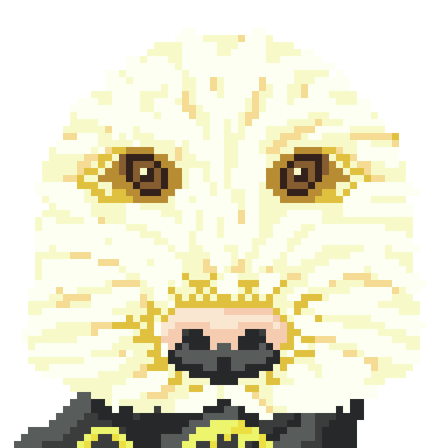 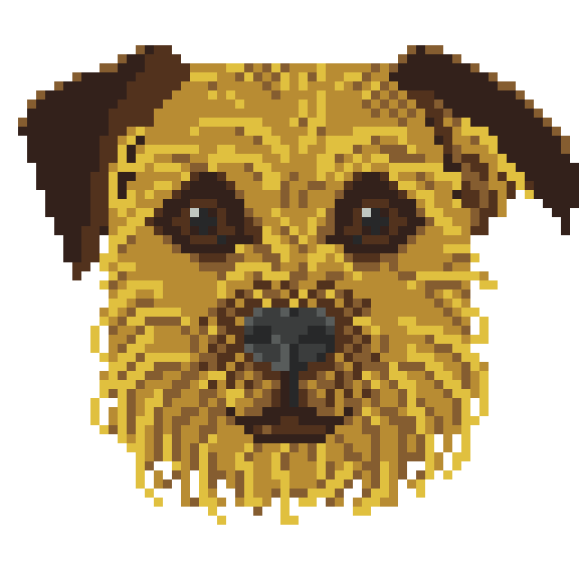 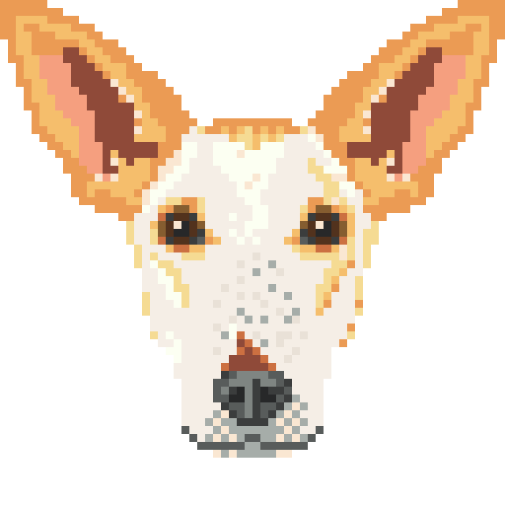 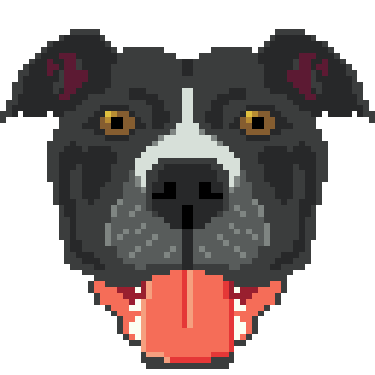 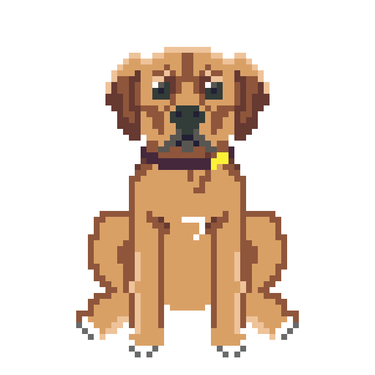 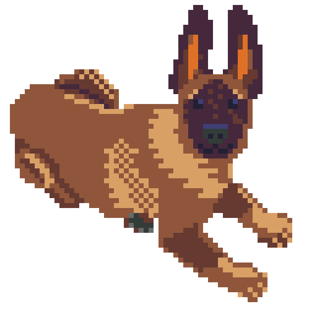
Horse Portraits
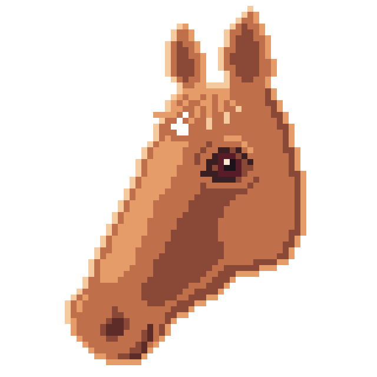
Slack/Discord Emotes
Other
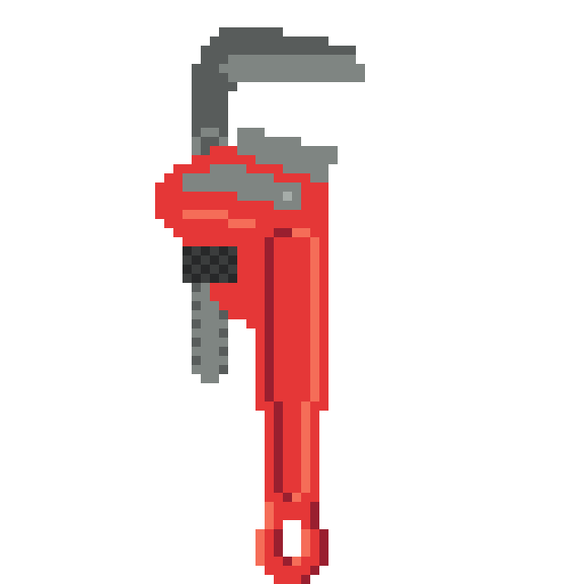 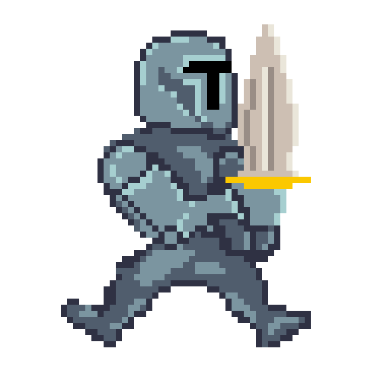 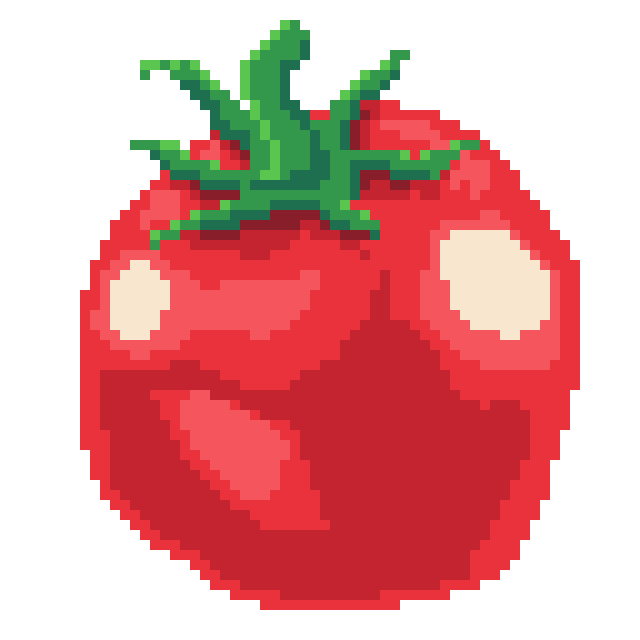
The blog of Matthew Martelle
Latest
The 5 E's of Engineering Priority
Comment on Github
Utility Lanyard
How to make a lanyard with a finger loop and a wrist loop that can be easily attached and detached from things.
- Cut a string to 32 inches (this fits my wide hands, 36 inches is good if you like puns)

- Fold in half and tie a figure-8 knot with both sides near the end.

- Tie another figure-8 knot and adjust it so you can comfortably fit a finger through it.

- Tie a third figure-8 knot and adjust it so your hand can just get through.

- Tie to item with a cow hitch. That's it!


When the lanyard is around your wrist it shouldn't fall off on accident.

The lanyard can be attached to other things

With a handy pull loop

To loosen it with.

Enjoy!
The 5 E's of Engineering Priority
Should an engineering project be done? Is it:
- Ethical: Required
- Economical: Required
- Effective: Required
- Efficient: Bonus
- Elegant: Double Bonus